입력
Channel 2에서 Basys3 SW[15:0]을 읽는다.
Basys3 SoC + NPU · SoC 06
Vivado에서 AXI GPIO를 연결하고 Vitis에서 C 프로그램을 작성하여, Basys3 스위치 16개 상태를 LED 16개에 그대로 표시한다.
Channel 2에서 Basys3 SW[15:0]을 읽는다.
MicroBlaze V가 AXI4-Lite Register를 Read/Write한다.
Channel 1에서 LED[15:0]을 구동한다.
Basys3의 스위치 16개를 읽어서 같은 번호의 LED 16개를 켭니다. GPIO(지피아이오, 범용 입출력)는 스위치·LED 같은 간단한 주변장치를 제어하는 기능입니다.
| 입력 조작 | 예상 출력 |
|---|---|
| SW0 ON | LED0 ON |
| SW3 ON | LED3 ON |
| SW0 + SW3 ON | LED0 + LED3 ON |
06장에서는 GPIO를 실제 보드에 연결하고 C 프로그램으로 제어합니다. AXI 신호의 상세 이론은 05장을 참고합니다.
06장은 01장에서 검증된 MicroBlaze V + BRAM 프로젝트를 복제하여 이어서 만드는 장입니다. 04장은 같은 하드웨어를 이용한 메모리 실습이고, 05장은 AXI 이론이므로 06장 시작을 위해 SoC를 다시 만들지 않습니다. 01장 원본 HW와 기존 Vitis 프로젝트는 보존합니다.
| 구분 | 01장 기존 파일 · 보존 | 06장 새 작업 파일 |
|---|---|---|
| Vivado Project | ~/soc/hw/soc01_microblaze_bram/soc01_microblaze_bram.xpr | ~/soc/hw/soc06_axi_gpio/soc06_axi_gpio.xpr |
| Block Design | soc01_mb_bram.bd | soc06_axi_gpio.bd |
| HDL Wrapper | soc01_mb_bram_wrapper | soc06_axi_gpio_wrapper |
| Top Module | soc01_mb_bram_wrapper | soc06_axi_gpio_wrapper |
| Constraints (XDC) | 기존 Clock / Reset 제약은 유지 | basys3_axi_gpio.xdc를 06장 프로젝트에 독립 보관하고 GPIO 포트를 추가 · SECTION 07 |
| Vitis Workspace | ~/soc/sw | 같은 Workspace 사용 · 별도 soc06_axi_gpio_platform과 soc06_axi_gpio Application 생성 |
~/soc/hw/soc01_microblaze_bram/soc01_microblaze_bram.xpr을 엽니다. microblaze_riscv_0, Local BRAM 16 KiB, MDM, Clocking Wizard, Reset 및 ILMB/DLMB를 확인합니다. 이때 M_AXI_DP는 주변장치 미연결 상태입니다.soc06_axi_gpio 이름으로 ~/soc/hw/soc06_axi_gpio/에 저장합니다. 원래 01장 프로젝트를 덮어쓰지 않습니다.soc01_mb_bram을 열고 File → Save Block Design As에서 이름을 soc06_axi_gpio로 지정합니다. 실제 사용했던 설정은 Local to Project, Add to Design Sources, Include Comments 선택, Freeze boundary 해제입니다.soc06_axi_gpio.bd를 우클릭하여 Create HDL Wrapper → Let Vivado manage wrapper and auto-update를 선택합니다. 생성된 soc06_axi_gpio_wrapper를 Set as Top으로 지정합니다.soc01_mb_bram_wrapper는 Remove File from Project만 수행합니다. Delete files from disk는 선택하지 않습니다. 원본 Block Design이나 기존 01장 프로젝트 파일도 삭제하지 않습니다.soc06_axi_gpio_wrapper인지 확인합니다. Tools → Report → Report IP Status에서 기존 IP 9개가 모두 Up-to-date / No changes required였던 정상 화면을 기준으로 확인합니다.화면 확인 06장 .xpr, Design Sources의 soc06_axi_gpio.bd, Top soc06_axi_gpio_wrapper, 기존 IP 9개 정상 상태를 확인한 후에만 SECTION 03으로 넘어갑니다. 실제 XDC·BD 소스 경로가 01장 폴더를 직접 가리키면 복사 상태를 먼저 점검합니다.
AXI GPIO를 검색합니다.
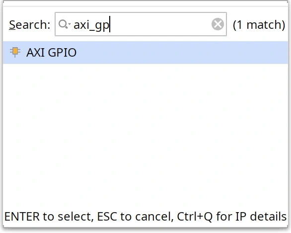
AXI GPIO를 추가하여 axi_gpio_0가 나타나는지 확인합니다.화면 확인 axi_gpio_0에 S_AXI, GPIO, GPIO2 인터페이스가 표시됩니다.
하드웨어의 IP 이름 axi_gpio_0는 이후 Vitis의 GPIO 주소 정보와 연결됩니다.
axi_gpio_0를 더블클릭하여 설정 창을 엽니다.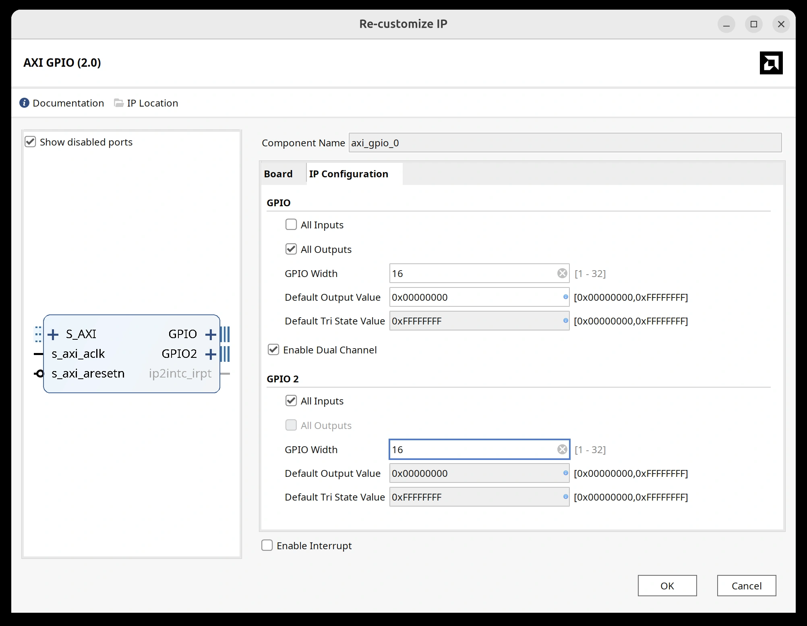
| 설정 | Channel 1 | Channel 2 |
|---|---|---|
| GPIO Width | 16 | 16 |
| GPIO Direction | All Outputs | All Inputs |
| Basys3 연결 | LED 16개 | 스위치 16개 |
Enable Interrupt는 끕니다. 두 채널의 값을 CPU가 반복해서 읽고 쓰는 가장 간단한 방식으로 실습합니다.
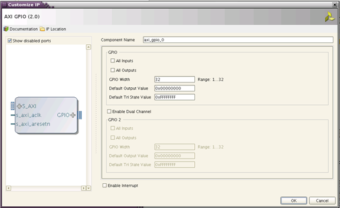
axi_gpio_0/S_AXI에서 Run Connection Automation을 실행합니다.
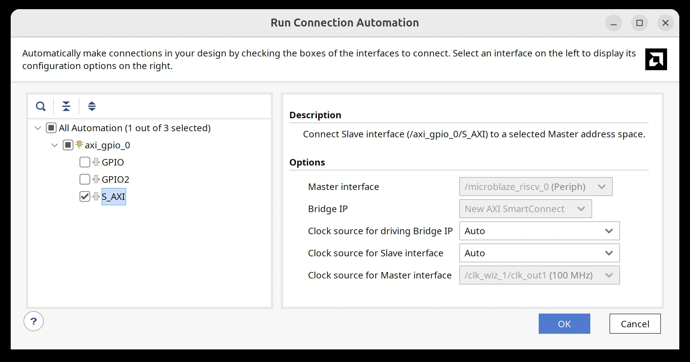
M_AXI_DP와 GPIO의 S_AXI 사이에 axi_smc(AXI SmartConnect)가 생성되는지 확인합니다.
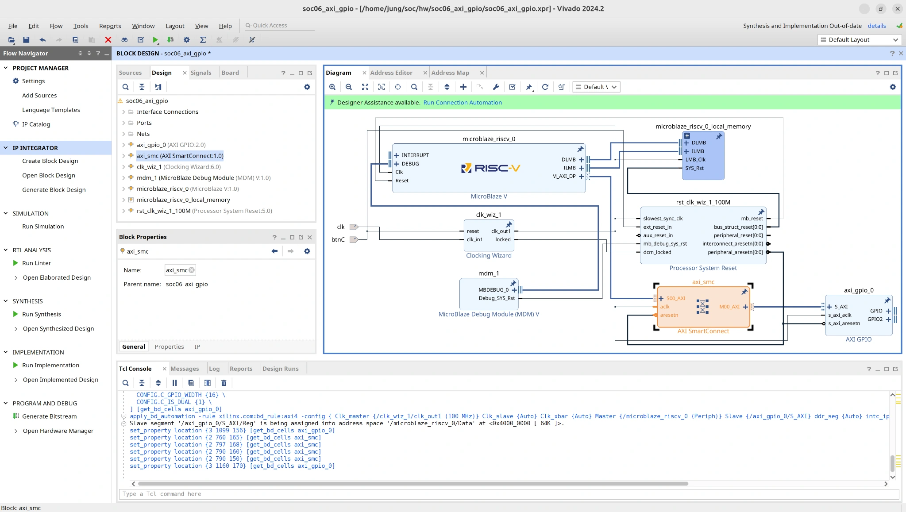
s_axi_aclk는 시스템 100 MHz 클록, s_axi_aresetn은 활성 Low 리셋 경로에 연결되는지 확인합니다.화면 확인 Vivado Validate Design에서 AXI, Clock, Reset 연결 오류가 없어야 합니다.
GPIO를 외부 포트로 만듭니다.GPIO2도 외부 포트로 만듭니다.led, sw로 지정합니다.
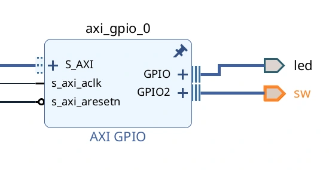
soc06_axi_gpio_wrapper를 Let Vivado manage wrapper and auto-update로 갱신합니다. 새 GPIO 외부 포트가 Top에 반영되지 않았다면 기존 soc06_axi_gpio.bd에서 Create HDL Wrapper를 다시 실행하여 갱신하고 soc06_axi_gpio_wrapper가 Top인지 확인합니다.
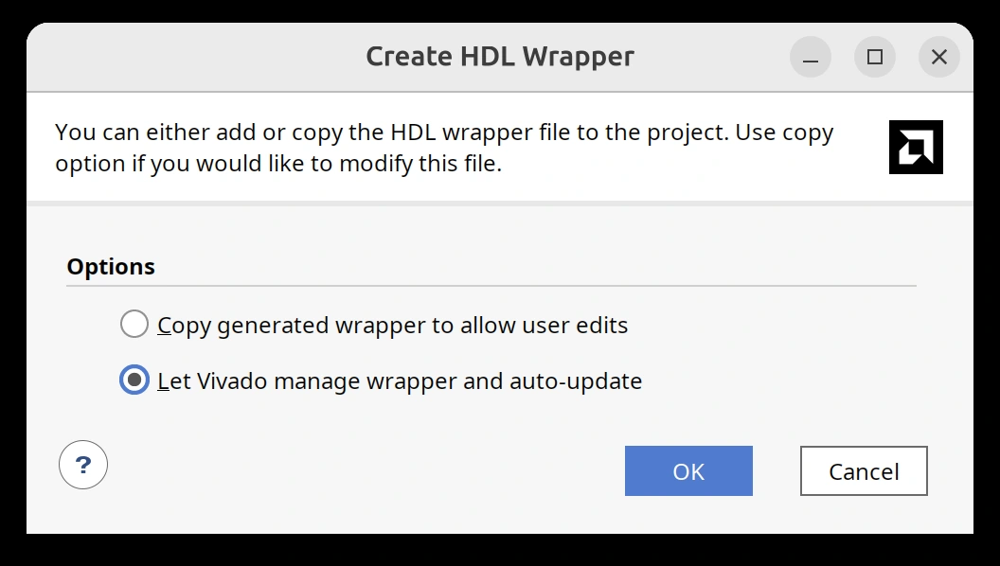
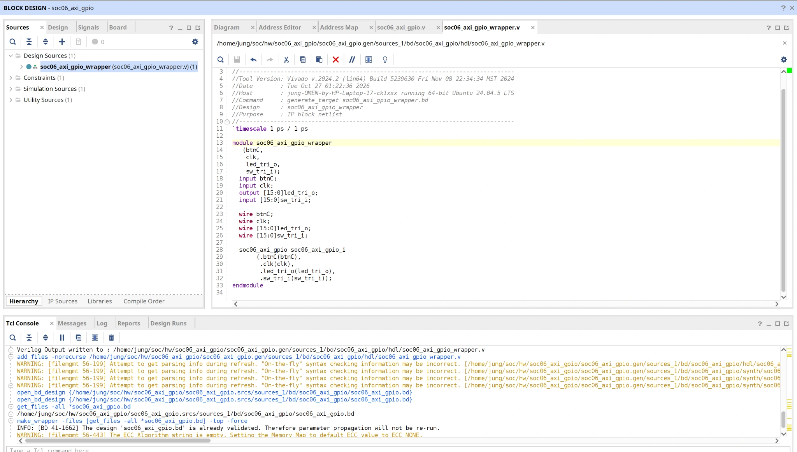
| Vivado 외부 인터페이스 이름 | HDL Wrapper 실제 포트 이름 | 방향 |
|---|---|---|
led | led_tri_o[15:0] | 출력 |
sw | sw_tri_i[15:0] | 입력 |
중요 XDC의 get_ports에는 led, sw가 아니라 led_tri_o, sw_tri_i를 사용해야 합니다. HDL Wrapper 코드를 임의로 수정하지 않습니다.
get_files -all *soc06_axi_gpio.bd
make_wrapper -files [get_files -all *soc06_axi_gpio.bd] -top -force
update_compile_order -fileset sources_1Vivado Tcl Console에서 Wrapper를 다시 생성합니다. 기존 검증 과정에서 사용한 명령입니다.
Basys3-Master.xdc의 기존 핀 번호를 그대로 사용합니다. 포트 이름만 실제 Wrapper에 맞춥니다.
| 대상 | 예시 핀 | XDC 포트명 |
|---|---|---|
| SW0 | V17 | sw_tri_i[0] |
| LED0 | U16 | led_tri_o[0] |
| CLK | W5 | clk |
| btnC | U18 | btnC |
create_clock 명령 때문에 [Constraints 18-1056] 경고가 발생할 수 있습니다. 06장에서는 검증된 하드웨어 설정을 임의로 변경하지 않습니다.## Basys3 Slide Switches
set_property -dict { PACKAGE_PIN V17 IOSTANDARD LVCMOS33 } [get_ports {sw_tri_i[0]}]
set_property -dict { PACKAGE_PIN V16 IOSTANDARD LVCMOS33 } [get_ports {sw_tri_i[1]}]
set_property -dict { PACKAGE_PIN W16 IOSTANDARD LVCMOS33 } [get_ports {sw_tri_i[2]}]
set_property -dict { PACKAGE_PIN W17 IOSTANDARD LVCMOS33 } [get_ports {sw_tri_i[3]}]
set_property -dict { PACKAGE_PIN W15 IOSTANDARD LVCMOS33 } [get_ports {sw_tri_i[4]}]
set_property -dict { PACKAGE_PIN V15 IOSTANDARD LVCMOS33 } [get_ports {sw_tri_i[5]}]
set_property -dict { PACKAGE_PIN W14 IOSTANDARD LVCMOS33 } [get_ports {sw_tri_i[6]}]
set_property -dict { PACKAGE_PIN W13 IOSTANDARD LVCMOS33 } [get_ports {sw_tri_i[7]}]
set_property -dict { PACKAGE_PIN V2 IOSTANDARD LVCMOS33 } [get_ports {sw_tri_i[8]}]
set_property -dict { PACKAGE_PIN T3 IOSTANDARD LVCMOS33 } [get_ports {sw_tri_i[9]}]
set_property -dict { PACKAGE_PIN T2 IOSTANDARD LVCMOS33 } [get_ports {sw_tri_i[10]}]
set_property -dict { PACKAGE_PIN R3 IOSTANDARD LVCMOS33 } [get_ports {sw_tri_i[11]}]
set_property -dict { PACKAGE_PIN W2 IOSTANDARD LVCMOS33 } [get_ports {sw_tri_i[12]}]
set_property -dict { PACKAGE_PIN U1 IOSTANDARD LVCMOS33 } [get_ports {sw_tri_i[13]}]
set_property -dict { PACKAGE_PIN T1 IOSTANDARD LVCMOS33 } [get_ports {sw_tri_i[14]}]
set_property -dict { PACKAGE_PIN R2 IOSTANDARD LVCMOS33 } [get_ports {sw_tri_i[15]}]
## Basys3 LEDs
set_property -dict { PACKAGE_PIN U16 IOSTANDARD LVCMOS33 } [get_ports {led_tri_o[0]}]
set_property -dict { PACKAGE_PIN E19 IOSTANDARD LVCMOS33 } [get_ports {led_tri_o[1]}]
set_property -dict { PACKAGE_PIN U19 IOSTANDARD LVCMOS33 } [get_ports {led_tri_o[2]}]
set_property -dict { PACKAGE_PIN V19 IOSTANDARD LVCMOS33 } [get_ports {led_tri_o[3]}]
set_property -dict { PACKAGE_PIN W18 IOSTANDARD LVCMOS33 } [get_ports {led_tri_o[4]}]
set_property -dict { PACKAGE_PIN U15 IOSTANDARD LVCMOS33 } [get_ports {led_tri_o[5]}]
set_property -dict { PACKAGE_PIN U14 IOSTANDARD LVCMOS33 } [get_ports {led_tri_o[6]}]
set_property -dict { PACKAGE_PIN V14 IOSTANDARD LVCMOS33 } [get_ports {led_tri_o[7]}]
set_property -dict { PACKAGE_PIN V13 IOSTANDARD LVCMOS33 } [get_ports {led_tri_o[8]}]
set_property -dict { PACKAGE_PIN V3 IOSTANDARD LVCMOS33 } [get_ports {led_tri_o[9]}]
set_property -dict { PACKAGE_PIN W3 IOSTANDARD LVCMOS33 } [get_ports {led_tri_o[10]}]
set_property -dict { PACKAGE_PIN U3 IOSTANDARD LVCMOS33 } [get_ports {led_tri_o[11]}]
set_property -dict { PACKAGE_PIN P3 IOSTANDARD LVCMOS33 } [get_ports {led_tri_o[12]}]
set_property -dict { PACKAGE_PIN N3 IOSTANDARD LVCMOS33 } [get_ports {led_tri_o[13]}]
set_property -dict { PACKAGE_PIN P1 IOSTANDARD LVCMOS33 } [get_ports {led_tri_o[14]}]
set_property -dict { PACKAGE_PIN L1 IOSTANDARD LVCMOS33 } [get_ports {led_tri_o[15]}]Clock 제약은 기존 프로젝트에서 확인한 설정을 유지합니다. 발생했던 Clock 관련 Critical Warning은 AXI GPIO 포트명 오류와 구별하여 판단합니다.
axi_gpio_0/S_AXI의 기준 주소가 0x40000000인지 확인합니다.
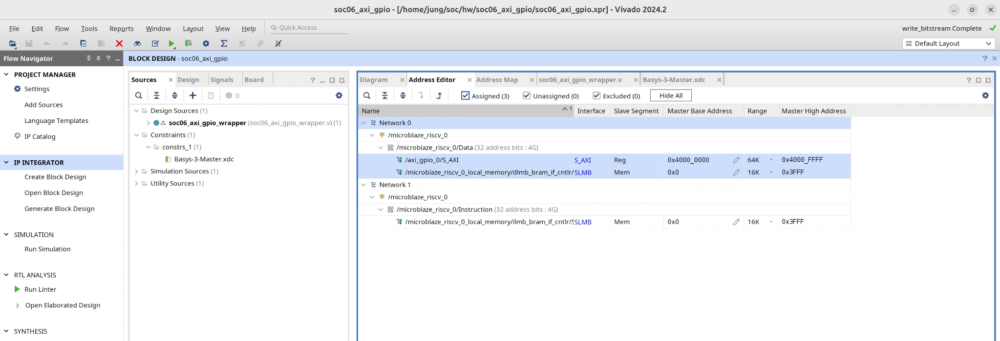
| 레지스터 | 오프셋 | 이 장에서 하는 일 |
|---|---|---|
GPIO_DATA | +0x00 | LED 출력값 |
GPIO_TRI | +0x04 | LED 방향 |
GPIO2_DATA | +0x08 | 스위치 입력값 |
GPIO2_TRI | +0x0C | 스위치 방향 |
실제 주소 범위: 0x40000000 ~ 0x4000FFFF(64 KiB 할당 영역). Local BRAM은 0x00000000 ~ 0x00003FFF(16 KiB)입니다. 64 KiB는 주변장치에 할당한 주소 범위이지 GPIO 데이터의 크기가 아닙니다.
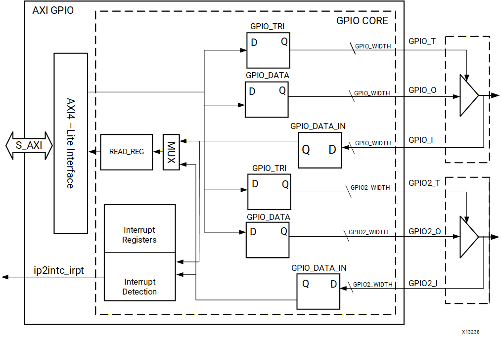
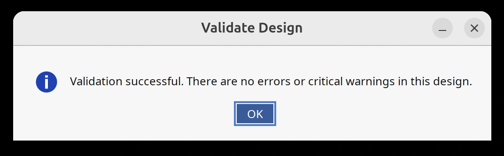
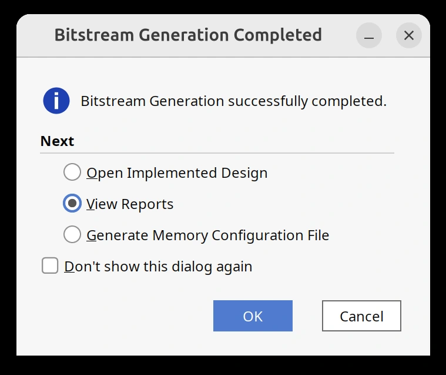
Bitstream Generation successfully completed를 확인합니다.| 확인 대상 | 정상 기준 |
|---|---|
| Validate Design | Validation successful |
| Bitstream | Bitstream Generation successfully completed |
| 포트 제약 | UCIO-1 또는 NSTD-1 없이 최상위 포트가 제약됨 |
이 실습에서는 초기에 sw/led 이름으로 인해 발생한 XDC 오류를 실제 Wrapper 이름으로 수정해 Bitstream 생성을 완료했습니다.
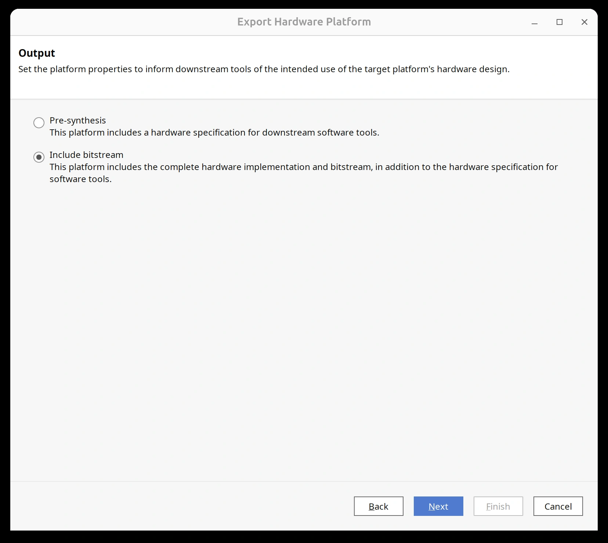
~/soc/hw/soc06_axi_gpio/soc06_axi_gpio.xsa화면 확인 하드웨어 산출물 .xsa가 만들어지면 Vitis에서 같은 파일을 선택합니다.
~/soc/sw를 엽니다.soc06_axi_gpio_platform을 입력합니다.soc06_axi_gpio.xsa를 선택합니다.
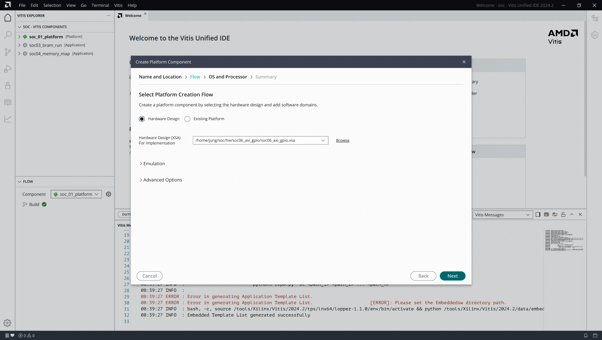
microblaze_riscv_0, OS는 standalone으로 선택합니다.soc06_axi_gpio_platform [Platform]을 선택하고, 왼쪽 아래 FLOW → Build를 실행합니다. Build 완료 메시지를 확인한 후 Application으로 진행합니다.
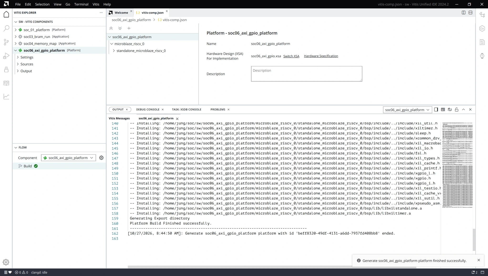
| 설정 항목 | 입력값 |
|---|---|
| Platform | soc06_axi_gpio_platform |
| Processor | microblaze_riscv_0 |
| Domain | standalone_microblaze_riscv_0 |
| Build 결과 | Platform Build Finished successfully |
기존 자료와 다른 점 06장은 soc_01_platform을 덮어쓰지 않고 신규 Platform을 만들었습니다.
soc06_axi_gpio, Workspace에 ~/soc/sw를 입력합니다.soc06_axi_gpio_platform을 선택합니다.standalone_microblaze_riscv_0를 선택합니다.
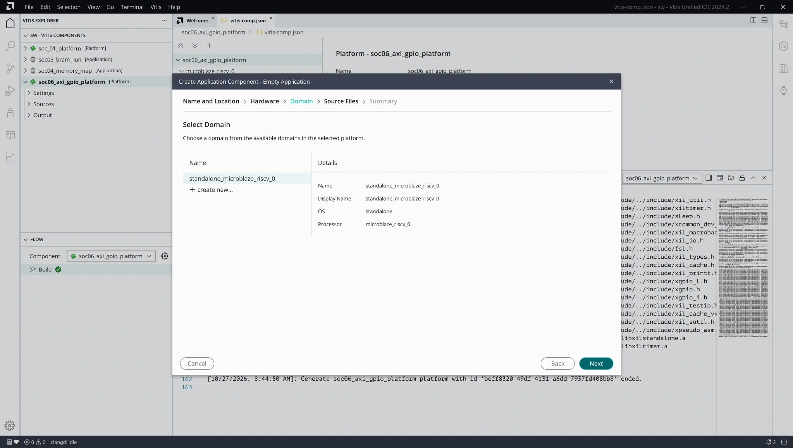
main.c 파일을 만듭니다.화면 확인 Vitis Explorer에 soc06_axi_gpio [Application]과 soc06_axi_gpio_platform [Platform]이 각각 보여야 합니다.
Vitis의 Sources → src → main.c에 아래 코드를 입력합니다. 아래는 동작을 이해하기 위한 간결 코드입니다. 저장소의 실습 소스 main.c는 Classic/SDT 초기화 분기와 Watch용 상태 변수를 포함한 별도 구현입니다. 두 소스를 섞어 붙여넣지 않고 하나를 선택하여 사용합니다.
#include "xparameters.h" // Vitis 자동 생성: GPIO 주소 정보
#include "xgpio.h" // Vitis 자동 제공: AXI GPIO 제어 함수
#include "xstatus.h" // Vitis 자동 제공: 성공·실패 값
#define LED_CH 1 // 직접 지정: Channel 1, LED 출력
#define SW_CH 2 // 직접 지정: Channel 2, Switch 입력
XGpio Gpio; // 직접 선언: GPIO를 제어할 변수
int main(void)
{
// 1. AXI GPIO 초기화
if (XGpio_Initialize(&Gpio, XPAR_XGPIO_0_BASEADDR)
!= XST_SUCCESS)
return XST_FAILURE;
// 2. 입출력 방향 지정 (0: 출력, 1: 입력)
XGpio_SetDataDirection(&Gpio, LED_CH, 0x0000);
XGpio_SetDataDirection(&Gpio, SW_CH, 0xFFFF);
// 3. Switch 값을 읽어서 LED에 계속 출력
while (1) {
u32 sw = XGpio_DiscreteRead(&Gpio, SW_CH);
XGpio_DiscreteWrite(&Gpio, LED_CH, sw);
}
return 0;
}| 코드에 나온 이름 | 누가 준비하나요? | 무엇인가요? |
|---|---|---|
xparameters.h | Vitis 자동 생성 | 하드웨어 주소 정의 |
xgpio.h | Vitis 자동 제공 | GPIO 드라이버 함수 |
xstatus.h | Vitis 자동 제공 | 성공·실패 상태값 |
XPAR_XGPIO_0_BASEADDR | Vitis 자동 생성 | 현재 GPIO의 기준 주소 |
LED_CH, SW_CH | 직접 지정 | LED 채널 1, Switch 채널 2 |
Gpio, sw | 직접 선언 | 제어 대상과 읽은 스위치 값 |
함수 맨 끝의 return 0;은 정상 종료값을 반환한다는 뜻입니다. 다만 현재는 while (1)을 계속 실행하므로 보통 이 줄에 도달하지 않습니다.
입력할 파일은 main.c 하나입니다. BSP 헤더를 복사하거나 직접 만들지 않습니다. xil_types.h의 u32는 드라이버가 포함한 자료형 정의를 통해 사용합니다.
처음 사용하는 GPIO 드라이버 프로그램입니다. 자동 제공되는 함수·상수와 직접 정한 변수명을 구분하면서 위에서 아래로 한 줄씩 읽습니다.
#include "xparameters.h"
#include "xgpio.h"
#include "xstatus.h"| 코드 | 쉽게 읽기 |
|---|---|
#include | 필요한 정의가 들어 있는 헤더를 사용하겠다는 뜻 |
xparameters.h | Vivado에서 만든 GPIO의 주소를 알려 줌 |
xgpio.h | GPIO를 초기화·읽기·쓰기 할 함수들을 제공 |
xstatus.h | 성공인지 실패인지 확인할 값 제공 |
#define LED_CH 1
#define SW_CH 2
XGpio Gpio;| 코드 | 쉽게 읽기 |
|---|---|
#define LED_CH 1 | LED는 GPIO 채널 1에 연결 |
#define SW_CH 2 | 스위치는 GPIO 채널 2에 연결 |
XGpio | AMD가 제공하는 GPIO 관리 자료형 |
Gpio | 내가 만든 GPIO 관리 변수의 이름 |
if (XGpio_Initialize(&Gpio, XPAR_XGPIO_0_BASEADDR)
!= XST_SUCCESS)
return XST_FAILURE;| 이름 | 쉽게 읽기 |
|---|---|
XGpio_Initialize() | GPIO 장치를 사용할 준비를 함 |
&Gpio | 초기화할 GPIO 변수의 위치(주소)를 전달 |
XPAR_XGPIO_0_BASEADDR | Vitis가 알려준 실제 GPIO 기준 주소를 전달 |
!= XST_SUCCESS | 초기화에 실패했는지 검사 |
return XST_FAILURE; | 실패하면 프로그램을 종료 |
if는 괄호 안 조건을 검사합니다. !=는 두 값이 서로 다르다는 뜻입니다. 초기화 결과가 XST_SUCCESS와 다르면 return을 실행하여 여기서 끝냅니다.
Vitis 화면의 회색 InstancePtr:, EffectiveAddr:는 Inlay Hints(인레이 힌트, 인자 이름 보조 설명)입니다. 설명만 표시되며 직접 타이핑하지 않습니다.
XGpio_SetDataDirection(&Gpio, LED_CH, 0x0000);
XGpio_SetDataDirection(&Gpio, SW_CH, 0xFFFF);| 인자 | 의미 |
|---|---|
&Gpio | 설정할 GPIO 장치 |
LED_CH, SW_CH | 설정할 채널 1 또는 2 |
0x0000 | 16비트 모두 0 → LED 출력 |
0xFFFF | 16비트 모두 1 → 스위치 입력 |
0000 0000 0000 0000입력(SW)1111 1111 1111 1111Vitis에 표시되는 Channel:, DirectionMask:도 각각 채널 번호와 입력·출력 설정값을 가리킵니다.
while (1) {
u32 sw = XGpio_DiscreteRead(&Gpio, SW_CH);
XGpio_DiscreteWrite(&Gpio, LED_CH, sw);
}| 코드 | 쉽게 읽기 |
|---|---|
while (1) | 멈추지 않고 계속 반복 |
u32 | 32비트 부호 없는 정수형 |
sw | 읽은 스위치 상태를 보관할 변수 |
XGpio_DiscreteRead(&Gpio, SW_CH) | 채널 2의 입력값을 읽음 |
XGpio_DiscreteWrite(&Gpio, LED_CH, sw) | 읽은 값을 채널 1의 LED에 출력 |
sw = 0x0005 → LED0 · LED2 ONreturn 0;은 main()이 종료될 때 반환하는 값입니다. 현재 프로그램은 무한 반복하므로 정상 실행 중에는 도달하지 않습니다.
새 Platform을 만든 직후 또는 main.c에 헤더 파일의 빨간 밑줄이 보이면 Platform → Application 순서로 Build하고, 코드 분석기만 갱신합니다. Ubuntu나 Vitis를 재부팅하지 않습니다.
soc06_axi_gpio_platform [Platform]을 선택합니다. 왼쪽 아래 FLOW → Build를 실행하고 오류 없이 끝났는지 확인합니다. 앞 절에서 이미 정상 빌드했다면 중복 실행할 필요는 없습니다.soc06_axi_gpio [Application]을 선택하고 Build를 클릭합니다. Build Finished successfully와 ELF 생성을 확인합니다.
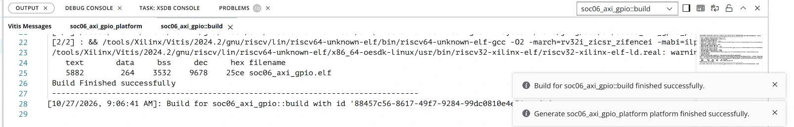
main.c에 빨간 밑줄이 남아 있으면 Ctrl + Shift + P → clangd: Restart language server 검색 → 해당 명령을 실행합니다. clangd(클랭디, C/C++ 코드 분석 서버)만 다시 시작하며 Vitis 프로젝트와 실행 중인 컴퓨터는 그대로 유지합니다.xparameters.h, xgpio.h, xstatus.h에 표시됐던 코드 분석 오류가 사라졌는지 확인합니다. Application Build 자체가 실패했다면 빨간 밑줄만 지우려 하지 말고 Build 출력의 실제 컴파일 오류부터 해결합니다.soc06_axi_gpio.bit, soc06_axi_gpio.elf, microblaze_riscv_0를 확인합니다.Hart #0 — PAUSED ON BREAKPOINT가 표시되면 main()에서 멈춘 상태입니다.
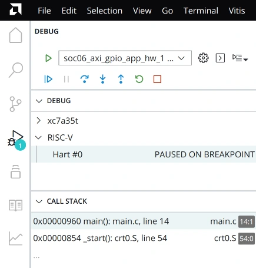
| 파일 / 화면 | 확인 내용 |
|---|---|
soc06_axi_gpio.elf | Application Build 후 자동 생성된 실행 파일 |
launch.json | Bitstream/ELF 다운로드 및 Debug 설정 |
main.c의 회색 InstancePtr: | Vitis 편집기의 인자 이름 보조 표시 |
Vitis 상단의 File → Preferences → Open Settings (UI)에서 Inlay Hints를 검색하고 Editor › Inlay Hints: Enabled → On으로 설정합니다. 직접 입력하는 소스 코드에는 포함되지 않습니다.
soc06_axi_gpio_platform [Platform]의 Build 성공 여부를 확인합니다.soc06_axi_gpio [Application]의 Build 성공 여부를 확인합니다.clangd: Restart language server를 실행하고 main.c를 다시 확인합니다.판정 기준: 실제 컴파일·링크가 성공했는데 편집기에만 빨간 밑줄이 남으면 코드 분석기 경로 갱신 문제일 수 있습니다. 반대로 컴파일러가 fatal error: xparameters.h: No such file or directory처럼 출력한다면 Platform/Domain/BSP 연결을 먼저 확인해야 합니다. #include에 컴퓨터의 절대 경로를 직접 넣거나 헤더를 수동 복사하지 않습니다.
기존 확인 사례: 06장에서는 Vitis 재실행 후 오류 표시가 사라진 사례가 있었습니다. 이제는 재실행 전에 clangd만 다시 시작하는 방법을 우선 적용합니다. 해당 방법의 성공 여부는 실행 화면에서 확인합니다.
프로그램 실행 후 스위치를 움직이면 같은 번호의 LED가 반응해야 합니다.
| 보드 조작 | 예상 LED 출력 |
|---|---|
| 모두 OFF | 모든 LED 꺼짐 |
| SW0 ON | LED0 켜짐 |
| SW1 ON | LED1 켜짐 |
| SW0 + SW3 ON | LED0 + LED3 켜짐 |
| SW15 ON | LED15 켜짐 |
| 모두 ON | LED 16개 모두 켜짐 |
| 증상 | 먼저 확인할 곳 |
|---|---|
| LED가 반응하지 않음 | Debug가 중단점에 멈추지 않았는지 확인하고 Continue 실행 |
| SW와 LED 번호가 다름 | sw_tri_i[n], led_tri_o[n] XDC 핀 매핑 |
| GPIO를 초기화하지 못함 | Platform XSA와 XPAR_XGPIO_0_BASEADDR |
| Bitstream 생성 오류 | Wrapper 포트명과 XDC get_ports 일치 여부 |
| Vitis 헤더에 빨간 밑줄만 표시 | Platform Build → Application Build 성공 확인 → Ctrl + Shift + P에서 clangd: Restart language server 실행 |
실습 확인 기준: 16개 스위치가 같은 번호의 LED에 대응하는지 보드에서 확인합니다. 빌드·디버그 성공과 실제 보드 동작 검증은 구별합니다.
| 문서 | 확인 항목 |
|---|---|
| AMD PG144 · AXI GPIO v2.0 | AXI GPIO 전체 구조와 공식 Register 정의 |
| AMD PG144 · Functional Description | AXI4-Lite, Single/Dual Channel, GPIO Block Diagram |
| AMD PG144 · Register Space | GPIO_DATA 0x00, GPIO_TRI 0x04, GPIO2_DATA 0x08, GPIO2_TRI 0x0C |
| AMD PG144 · Programming Sequence | Input/Output Direction과 Data Read/Write 순서 |
| AMD/Xilinx GPIO Driver API | XGpio_Initialize, DiscreteRead, DiscreteWrite |
| AMD embeddedsw · xgpio_example.c | 공식 XGpio 초기화와 LED Output 예제 구조 |
| Digilent Basys 3 Reference Manual | Figure 16 · 16 Switch / 16 LED 연결과 LED Active-High 구조 |
| Digilent Basys-3-Master.xdc | SW0~SW15, LED0~LED15 FPGA Pin |